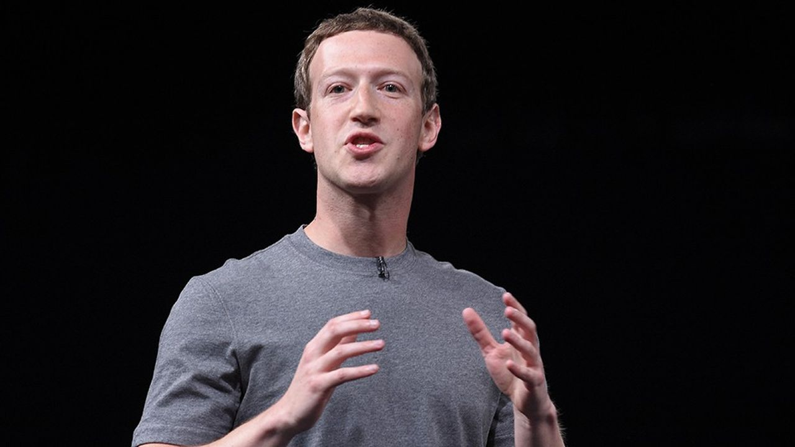

Tout d'abord, Facebook a été créé le 4 février 2004 par des étudiants de l'université d'Harvard. Parmi ces étudiants, se trouve Marck Zuckerberg qui est le créateur officiel. En préquelle à ce réseau, Mark Zuckerberg a créé un site internet nommé: Facemash. Ce site avait pour but de classer les femmes selon leur physique à partir de photos illégales du trombinoscope de Harvard, ce site dégradant et illégal a fermé seulement 2 jours aprés son ouverture. C'est donc à partir de ce site, qu'il avait lui même créé, que Zuckerberg a créé "the Facebook". A l'origine, the Facebook était réservé aux étudiants de Harvard, cependant son succés s'est répendu et rapidement Facebook s'ouvre aux autres universités principalement aux Etats-Unis comme à Columbia ou encore Stanford. Puis son succés fini par s'étendre à l'internationnal. En 2005, aprés l'achat du nom pour 200 000$, The Facebook perd le "The" pour se nommer plus que Facebook.


Pour commencer Facebook est un réseau journalier qui se veut convivial. Ce réseau permet de poster tous les jours (ou non) des photos, des vidéos, des documents... en général donc, de partager des moments de sa vie qui se produisent le jour même (dans le but de se remémorer tous les souvenirs que vous avez partagé à la même date les années précédentes). Ce réseau permet aussi de discuter avec ses amis, de créer des groupes de discussion etc... . Lorsque l'on s'incrit et que l'on créé un compte sur ce réseau, l'utilisateur rentre des informations pour la plupart visibles par toutes les personnes qui vont visiter son profil. Au cours du temps, le réseau se développe et propose de plus en plus de fonctionnalités à l'utilisateur (comme les appels vidéo qui sont apparus le 6 juillet 2011) tout cela dans le but de rendre le réseau trés convivial et chaleureux, et également de ramener toujours plus d'utilisateurs.
Pour commencer Facebook est le réseau le plus utilisé au monde avec plus de 3 milliards d'utilisateurs. Parmi ces utilisateurs: 56,8% des utilisateurs sont des hommes, 43,2% sont des femmes. En ce qui concerne les diffférentes tranches d'âges qui utilisent ce réseau, voici quelques données chiffrées: 29,5% de l'audience de Facebook est âgée de 25 à 34 ans, 22,6% est âgée de 18 à 24 ans et 30,2% est âgée de 35 à 54 ans. 42,8% des utilisateurs ont plus de 35 ans. Maintenant que nous avons fait le tour des différents publics, nous allons passer aux conditions d'utilisation (voir le doccument suivant pour avoir toutes les informations nécessaires):